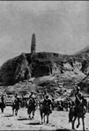
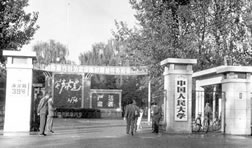
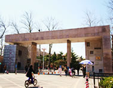

- 北京大学 北京 综合
- 清华大学 北京 理工
- 复旦大学 上海 综合
- 浙江大学 浙江 综合
- 南京大学 北京 综合
中国人民大学（Renmin University of China）是中国共产党创办的第一所新型正规大学，是一所以人文社会科学为主的综合性研究型全国重点大学，直属于教育部，由教育部与北京市共建。学校的前身是1937年创办于延安的陕北公学，以及后来的华北联合大学和华北大学。1949年12月16日，中央人民政府政务院第十一次政务会议根据中共中央政治局的建议，通过了《关于成立中国人民大学的决定》。1950年10月3日，以华北大学为基础合并组建的中国人民大学隆重举行开学典礼。阎子元、胡锡奎、崔耀先、郭影秋、成仿吾、张腾霄、李焕昌、袁宝华、李文海、马绍孟、程天权先后担任党委（党组）书记，吴玉章、成仿吾、袁宝华、黄达、李文海、纪宝成、陈雨露先后担任校长。现任党委书记为靳诺教授，校长为刘伟教授。
  
2017200508 陈可莹 公共管理学院